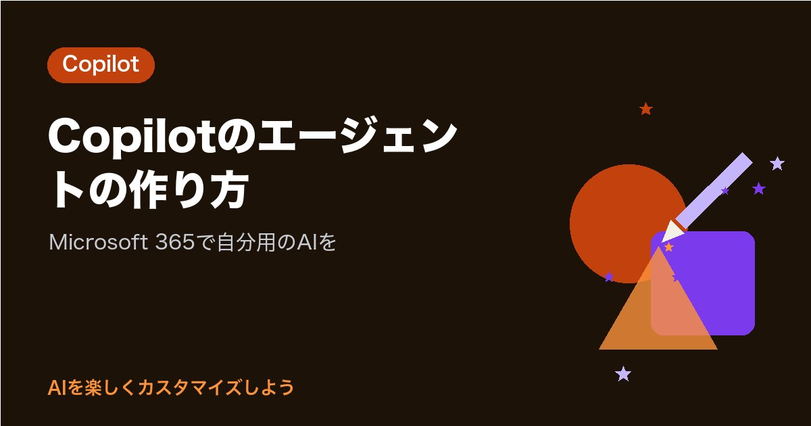

Copilotのエージェントの作り方｜Microsoft 365で自分用のAIを

会社のパソコンでCopilotを開くたびに、「この手順書を見て」「この形でまとめて」と同じ説明をしていませんか。
あなたのその説明は、Copilotのエージェントに一度まとめておくと、エージェントを選んで話しかけるだけで毎回同じように働いてくれます。Microsoftの公式ドキュメントでは、エージェントは「エージェントビルダー（Agent Builder）」という、コードを書かずに作れる道具で作ると説明されています。
この記事では、Microsoft 365でエージェントを作る手順と、ライセンスによって使える資料がちがう点を、公式情報で確かめてまとめました。
確認日：2026年10月23日（公式のヘルプで確認。画面や名前は変わることがあります）
エージェントでできること
エージェントは「決まった仕事を覚えた、あなた専用のCopilot」です。公式ドキュメントで確かめた設定の項目を表にしました。
| 項目 | 中身 | 上限（公式の記載） |
|---|---|---|
| 名前（Name） | エージェントの名前 | 30文字まで |
| 説明（Description） | 何をするエージェントか。使う人にも表示される | 1,000文字まで |
| 指示（Instructions） | どう動くか、何をどの順で行うか | 8,000文字まで |
| 知識（Knowledge） | 参考にするウェブサイトや社内の資料 | 資料の種類ごとに上限がある |
| 最初の問いかけ（Starter Prompts） | 使う人がすぐ試せる問いかけの例 | 最低の数の決まりはなし |
| アイコン | AIで作る、一覧から選ぶ、画像をアップロードする | PNG、192×192ピクセル、1MBまで |
8,000文字の指示というと長く感じますが、最初は5行ほどで十分です。使いながら少しずつ足していけば大丈夫です。
あなたの会社で使えるかを確かめる
エージェントで使える機能は、会社のライセンスと設定によって変わります。Microsoftの公式ドキュメントでは、Microsoft 365 Copilot Chatは「すべてのMicrosoft 365ユーザーが使える」AIチャットで、Copilot Chatのユーザーは、指示やウェブを使うエージェントを利用できると説明されています。
同じドキュメントの表を、あなたが使う場面に関係する部分だけ抜き出しました。
| エージェントの機能 | Copilot Chat（従量課金なし） | Copilot Chat（従量課金あり） | Microsoft 365 Copilot（ライセンスあり） |
|---|---|---|---|
| 指示を書く | 使える | 使える | 使える |
| ウェブ検索を知識にする | 使える | 使える | 使える |
| コードインタープリター・画像生成 | 使える | 使える | 使える |
| SharePointの資料を知識にする | 使えない | 使える | 使える |
| アップロードしたファイルを知識にする | 使えない | 使える | 使える |
| メール・Teamsのチャットや会議を知識にする | 使えない | 使えない | 使える |
従量課金は、会社が「使ったぶんだけ払う」設定をしている場合のことで、Copilotクレジットという単位で数えられます。同じドキュメントには、Copilotのライセンスがない利用者は、会社の設定や提供の状況によってはエージェントを作れない場合があるとも書かれています。
まずは、あなたの画面の左側に「エージェント」と「新しいエージェント」があるかを見てみてください。見当たらないときや、社内の資料を使いたいときは、社内の情報システムの担当の方に聞いてみるのが近道です。
エージェントの作り方（ことばで説明する方法）
Microsoftのサポートページで紹介されている、いちばん手軽な作り方です。
- Microsoft Copilotのアプリを開く
- 左側の「エージェント」の下で「新しいエージェント」を選ぶ
- エージェントにしてほしいことを文章で書いて「送信」を選ぶ
- 画面の案内にしたがって仕上げる
Microsoft Learnのドキュメントによると、ことばで説明すると、エージェントビルダーが名前・説明・指示を自動で作り、必要な知識の候補も足してくれます。たとえば「毎日のメールを要約して」と書くと、知識に「自分のメール」が加わる、という例が載っています（メールを知識にできるのはライセンスがある場合です）。
できあがった設定は「構成（Configure）」のタブで確かめられます。ことばで作る方法は、Microsoft 365の表示言語が対応している言語の場合に使えると書かれているので、うまく動かないときは次の手で作る方法を選んでください。
エージェントの作り方（自分で項目を書く方法）
ここでのボタン名は、英語版のMicrosoft Learnのドキュメントにある名前です。日本語の画面では、カッコ内のような日本語で表示されることがあります。
- 「新しいエージェント」を選ぶ
- 「Skip to configure」（構成へ進む）を選ぶ
- 「構成（Configure）」のタブで、名前・説明・指示・知識・最初の問いかけを入れる
- 「Try it」（試す）のタブで話しかけて、答え方を確かめる
- よければ「作成」を選ぶ
「Try it」のタブは、名前・説明・指示がそろうと使えるようになります。
テンプレートから作る方法もあります。「新しいエージェント」の画面でテンプレートを選ぶと、説明・指示・問いかけが入った状態で始められ、「構成」で自分用に直してから「作成」を選びます。
「構成」のタブには、答え方の初期設定（Auto・Quick response・Think deeper）を選ぶ欄もあります。ふだんの短い問い合わせ用ならQuick response、考える量が多い作業ならThink deeper、迷ったらAutoのままで大丈夫です。
知識（資料）の入れ方と上限
公式ドキュメントにある、資料の種類ごとの上限です。
| 資料の種類 | 1つのエージェントあたりの上限 |
|---|---|
| 公開ウェブサイトのURL | 4つ |
| SharePointのファイル・フォルダー・サイト | 100ファイル |
| SharePointのリスト | 1つ |
| OneDriveのファイル | 50ファイル |
| Teamsのチャットと会議 | チャット5つ、会議5つ |
| パソコンからアップロードしたファイル | 20ファイル |
アップロードできるファイルは、Word・PowerPoint・PDF・テキストが512MBまで、Excel（.xls・.xlsx）は30MBまでと書かれています。Excelは、データが1つのシートにまとまっていると答えやすいという注意もあります。
「構成」の知識の欄には、「Only use specified sources」（指定した資料だけを使う）の切りかえもあります。オンにすると、調べものが必要な質問には、あなたが入れた資料を優先して答えるようになります。
大切な注意がひとつあります。アップロードしたファイルの中身は、そのエージェントを使える人ならだれでも答えを通して見られる、と公式ドキュメントに書かれています。共有する予定があるなら、人に見せたくない資料は入れないでおくと安心です。
仕事用のエージェントの例（コピーして使えます）
印刷・製造の現場で、残業を30分減らしたいあなたを思いうかべて作った例です。指示の欄にそのまま貼りつけて使えます。
例1：作業手順の質問係
- あなたは工場の作業手順について答える係です
- 知識に入れた作業手順書だけを使って答えてください
- 手順書に書かれていないことは「手順書に記載がありません。班長に確認してください」と答えてください
- 答えは番号つきの手順で、1つの手順に1つの動作だけを書いてください
例2：日報まとめ係
- あなたは製造現場の日報を整える係です
- わたしのメモを「今日やったこと」「困ったこと」「明日やること」に分けてください
- 数字はメモに書かれた値をそのまま使い、計算や推測で足さないでください
- です・ます調で、全体を200字以内にしてください
例3：お知らせ文の清書係
- あなたは社内のお知らせを清書する係です
- 現場の人がスマホで読みやすいよう、1文を40字以内にしてください
- 日時・場所・持ち物を最初に表でまとめてください
例1の手順書は、ライセンスや従量課金の設定がない場合、ファイルとして知識に入れられません。その場合は、手順の要点を指示の欄に書いておく方法もあります（指示は8,000文字まで書けます）。
遊び心のあるエージェントの例
会社のアカウントで作るエージェントなので、使い方は会社のルールの範囲で考えたいところです。それでも、職場が少し楽しくなる使い方はたくさんあります。
| エージェント | 指示の例 |
|---|---|
| 朝礼のひとこと係 | 季節の話題と、安全に気をつける一言を、合わせて60字で3案出してください |
| 新人さんの相談係 | 社内の用語を、たとえ話を1つ添えてやさしく説明してください |
| 歓送迎会の幹事係 | 人数と予算を伝えたら、当日の流れを時間つきの表にしてください |
| クイズ係 | 安全や品質のルールから、3択クイズを5問作ってください |
朝礼のひとこと係のような小さなエージェントでも、毎朝5分かかっていた準備が短くなれば、1か月でかなりの時間になります。
作ったエージェントを共有する
Microsoftのサポートページによると、共有の流れは次のとおりです。
- エージェントを作り終えたときに表示されるリンクの「Copy」（コピー）を選ぶ
- 「Change sharing settings」（共有の設定を変える）を選び、どこまで共有するかを決めて「保存」を選ぶ
- メールやTeamsのチャットにリンクを貼る
あとから共有するときは、左側の一覧でエージェントを選び、「…（More）」から「Share」を選びます。共有を受けた人はエージェントを編集できず、編集の権限は作った人に残ると書かれています。また、エージェントは使う人のアクセス権を守るので、その人が見られない資料の中身は答えに含まれません。
確かめた公式の情報
- Microsoft Copilot を使用して独自のエージェントを構築する（Microsoft サポート）
- Share an agent in the Microsoft Copilot app（Microsoft Support）
- Build agents in Agent Builder（Microsoft Learn）
- Add knowledge sources to an agent in Agent Builder（Microsoft Learn）
- Agent capabilities and licensing models（Microsoft Learn）
まとめ
- エージェントは、指示と知識を決めて保存できる、あなた専用のCopilot
- 作り方は「エージェント」→「新しいエージェント」→してほしいことを書いて「送信」。項目を自分で書く方法やテンプレートもある
- 名前は30文字、説明は1,000文字、指示は8,000文字まで
- 指示とウェブ検索はCopilot Chatでも使える。SharePointやアップロードしたファイルを使うには、従量課金かライセンスが必要
- アップロードした資料は、エージェントを使える人なら答えを通して見られるので、共有前に見直す
まずは今日、画面の左側に「新しいエージェント」があるかを見て、あれば「朝礼のひとこと係」から作ってみませんか。最後まで読んでくださって、ありがとうございます。あなたなら、職場のどんな説明をエージェントに任せてみたいですか？
まずは1つのAIで、あなたの呼び名か口調を1つだけ設定してみませんか。次の会話から、AIの返事が少し“あなた向け”に変わるのを感じられます。
あなたなら、AIにどんな話し方をしてほしいですか？
最後まで読んでくださり、ありがとうございました。